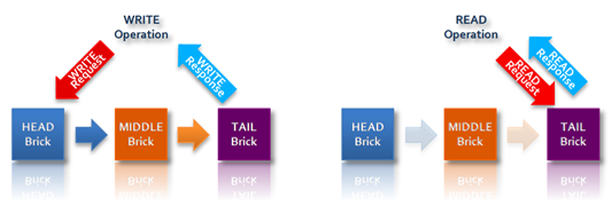
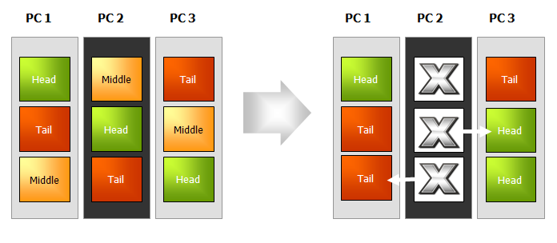

目次
Hibari®は、キー・バリュー・ストア（KVS）方式を用いた分散型データベースです。大規模化し続けるデータ、いわゆる“Big Data”に対応し、商用にすぐに活用できます。大量のデータをどのように保管するかが大きな問題となる現在、それに対処する「NOSQL」というソリューションが出てきました。Hibariはこの分野で、次のような多くの理由から注目を集めています。
- Hibariは、プログラミング言語Erlangと革新的なチェイン・レプリケーション技術を使った唯一のオープンソースのキー・バリュー型データベース（KVDB） です。Erlangは、堅牢で高性能な分散型ストレージ・ソリューションの構築には理想的なプログラミング基盤を提供します。一方、チェイン・レプリケーションは、データの一貫性を犠牲にすることなく、高いスループットと高可用性を提供します。
- Hibariは、キャリアクラスの通信事業分野で要求される厳格な基準を満たすように作られた唯一のオープンソースのキー・バリュー型データベース です。通信事業分野の製品では、数百万ユーザーの利用実績を持ちます。
Hibariは、次のような優れた特長を備えています。
- ストレージ・オプションとして、ディスクベースあるいはRAMのみの使用を、テーブル単位で選択できます。
- キー単位で有効期限およびカスタムのメタデータをサポートします。
- 制限範囲内で複数キーのアトミック・トランザクションをサポートします。
- キーのタイムスタンプ機能によって「テスト・アンド・セット」型の操作が可能です。
- システムの規模に応じた自動データ配置バランシング機能を持ちます。
- コードのライブ・アップグレードをサポートします。
- 複数のクライアントAPIを実装しています。
この最初の章では、「Big Data」の時代が投げかける問題に対処するために近年出現した「NOSQL」ソリューションについて簡単に説明します。その後、大規模データを扱うアプリケーションの開発者や管理者、あるいはユーザーにHibariが提供する大きな利点について、さらに詳しく紹介します。
まず、NOSQLという新しい動向は、伝統的なRDBMS（リレーショナル・データベース管理システム）を無条件に否定するものではありません。この動向は、今日のデータ環境がSQLだけに留まらず（Not Only SQL：NOSQL）、ストレージに多様なツールが必要であるという認識が急速に広がっていることの表われです。リレーショナル型のデータ・ストレージとNOSQL型のデータ・ストレージは、それぞれ異なるアプローチを持ち、異なる種類のアプリケーションやサービスに適しています。これらは互いに補完するものであると理解してください。 NOSQLが注目されるようになった背景には、TB（テラバイト）あるいはPB（ぺタバイト）級のデータを保管して使うアプリケーションやサービスの急増という現状があります。その分野では頻繁に「常時使用可能」な可用性を保証し、エンドユーザーの待ち時間を減らす努力が払われてきました。たとえば次のような多くの市場分野で、さまざまな組織がBig Data時代の到来に備えて取り組んでいます。
- Webサービス：検索、eコマース、ソーシャルメディア、ユーザー作成コンテンツ等による大量データの要求への対応
- 通信事業：何百万件もの加入者のネットワークログや通話データ記録の管理と分析
- 公益事業：次世代送電網の巨大データ容量の管理と分析
- 金融サービス：リスク分析とモデル化を目的とした顧客履歴データの保管およびマイニング
- 小売分析：クリック・ストリーム分析とマイクロターゲティング
- バイオテクノロジー：ゲノム解析
これらの分野に限らず、大量データを扱う環境にあるあらゆる組織が、いまや未曽有の大規模データを保管するシステムを構築する問題に直面しています。RDBMSとハイエンドの専用ハードウェアを軸とする伝統的なデータ保管アプローチではこうしたニーズに応えられないと、多くの組織は既に気づいています。特に問題になるのは、次の点です。
- 単独のRDBMSインスタンスの「スケールアップ」は、どんなにハイエンドのシステムを用いても、また、どんなに多額の費用をかけても、必要な規模を到底達成できません。
- 複数のRDBMSインスタンスに分割する「スケールアウト」は、巨額の費用を伴ううえに、運用が大幅に複雑になり、リレーショナル・モデルの利点を大きく損ないます。
先進的な組織では、コストや複雑性にしわ寄せせずにBig Dataに適した容量を実現させようと、より良いスケーリングの方法を追求してきました。また、増加の一途をたどる使用シナリオのすべてが、RDBMSの複雑なクエリー機能や管理機能を必要とするわけではないことも、同時に明らかになってきました。アプリケーションやサービスによっては、SQL構造や厳密なACIDが必要ないものもあります。さらに環境によっては、これらの過剰機能が高価につき、柔軟性と即応性が要求される非常に厳しい市場競争の中で、サービス提供が妨げられる可能性すらあります。
つまり、近年急増しているサービスで必要とするデータは、より大規模になる一方で、構造化の必要性はより少ないのです。
そう考えると、業界を牽引するWeb企業がNOSQLの動きの最前線にいるのは不思議なことではありません。特に、Google社の BigTable論文（2006年） と、Amazon社の Dynamo論文（2007年）は、NOSQL市場に大きな影響を及ぼしました。BigTable やDynamo、あるいはその両方から構想を得たNOSQLソリューションが多数存在しており、ここ2年でいくつかのソリューションがオープンソースのコミュニティで発表されています。
NOSQLを使ったデータ・ストレージソリューションは、それぞれ細かい点では異なりますが、基本的に次のような共通点があります。
- データモデルがシンプルである。データモデルはソリューションごとに異なり、それによってNOSQLシステムは次の3種類に分類できます。 1) キー・バリュー型データストア（例：Dynamo、Hibari） 2) 列指向型データストア（例：BigTable） 3) ドキュメント指向型データストア（例：CouchDB） これらはすべて異なるものですが、伝統的なRDBMSと比較すると、データモデルがよりシンプルで高い柔軟性を持ちます。このシンプル指向は、クライアントAPIにも引き継がれています。
- 汎用型のPCを基盤とした複数ノードに分散できます。何十、何百、何千とある汎用型のPCにスケールアウトすることにより、Big Dataの容量を低廉なコストで実現できます。受信した要求の並列処理と連動するデータ分割スキームにより、必要な高性能を得られます。
- データ・オブジェクトを複数ノードでレプリケーション（複製）することにより、コンポーネントの障害発生時にも高可用性を確保できます。
NOSQLストレージ・ソリューションの歴史や長所、あるいは設計の問題等についてさらに詳しく知りたい場合は、Webで検索してください。
Hibariは、Gemini Mobile Technologies社が社内で開発したものです。Gemini Mobile Technologies社は、アジア、ヨーロッパ、アメリカで、Tier 1モバイル・オペレータ向けの大規模メッセージングおよびトランザクション・システム開発分野の先頭に立つ企業です。Gemini社が必要とするデータストアは、Tier 1通信事業分野向け製品の導入環境に必須の堅牢さに加えて、効率的で高速かつ柔軟性を備え、拡張可能なものです。ところが、当時利用できる選択肢の中には満足できるものはありませんでした。そこで2005年に、Gemini社はのちに「Hibari」となるシステムの開発に着手しました。Hibariという名称は、日本語でヒバリ（雲雀）、漢字では「クラウド（雲）の鳥」を意味します。その後、システムが成熟して製品化できるようになったのを機に、2010年7月、Gemini社はApache 2.0ライセンスの下でHibariをオープンソースのコミュニティにリリースしました。Hibariが成長を続けて完成度を高める場として最も適しているのはオープンソースのコミュニティであると、Gemini社は考えています。
ここからは、Hibariの特長について説明します。これらの特長によって、Hibariは現代のBig Dataストレージ・システムを求めるビジネスおよび開発者にとって魅力的な選択肢となっています。
Erlangは、高信頼性で高性能な分散型システムを構築するように設計された汎用プログラミング言語および実行環境です。Erlangは、まず1980年代に先進的通信事業のネットワーク・システム構築用にEricsson社によって開発され、その後1998年に、Erlang/OTP (Open Telecom Platform)としてオープンソース化されました。HibariはすべてErlangで記述されています。
Erlangは次のような幅広い長所を持ち、分散型でキー・バリュー方式のストレージ・ソリューションにとって理想的な基盤を提供します。
- *並列*：Erlangのプロセスは、メッセージパッシングによる通信を行い、メモリを共有しないため、非常に軽く実行できます。スケジューリング、メモリ管理、その他並列処理に関するサービスを管理するのはErlang のVMであり、ホストのオペレーティング・システムに並列処理の要求を送ることはありません。
- *分散*：Erlangは、分散環境に特化して設計されています。メッセージパッシングはTCP経由で透過的に行われるため、Erlangのプロセス同士が通信する際は、同一ノードでも違うノードでもまったく同じ方法です。シンプルかつ効率的な設計により、高性能の分散型ストレージ・システムに求められる高度な並列性と拡張性を達成しています。この優れた並列性と分散処理により、Erlangは複数ホスト上で連携しながら稼働する点を除いては、オペレーティング・システムに似た初めての “アプリケーション・システム”と言われています。
- *堅牢性*：Erlangのプロセスは、互いに完全に独立しており、データを共有しません。各プロセスが個別に動作するため、プロセスが互いを監視してプロセス障害を検知した場合は、すぐに対応できます。これは、リモート・ノードにおいても可能です。
- *移植性*：Erlangの VMは、Linux上だけでなく、UNIX、Windows、Macintosh、VxWorks上でもすべて同じものが稼働します。Erlangの分散プロセスは、異なるホスト・オペレーティング・システムが混在する環境でも、シームレスに相互の通信ができます。システム管理者は環境の変化に対応してホストをうまく組み合わせる必要があることを考えると、オペレーティング・システムを問わないこの移植性は、ストレージ・システムの弾力性の向上に大きく寄与します。
- *ホット・コードアップグレード*：HibariのようなErlang ベースのアプリケーションは、ホット・コードアップグレードをサポートしています。そのため、システムを終了せずにアップグレードを適用できます。切り替え中は旧コードと新コードが同時に稼働します。これは、エンドユーザーに「常時使用可能」な可用性を提供する必要がある環境にとって重要な利点です。
他にも、インクリメンタルなガベージ・コレクションやシングル・アサインメント変数、強固な例外処理機能などにより、Erlangは信頼性の高い分散型アプリケーションに最適なものとなっています。
分散型でキー・バリュー・ストア方式を用いたHibariは、チェイン・レプリケーション方式を実装しています。チェイン・レプリケーションとは、データの一貫性を犠牲にせず、冗長性を確保して高可用性を得るために、 van Renesse and Schneiderが最初に提案したものです。Hibariのストレージ・クラスターにおけるチェイン・レプリケーションの動作を簡単に説明すると、次のようになります。
- コンシステント・ハッシングにより、キー・スペースを複数のストレージの「チェイン」に分割します。
- 各チェインは、複数の論理ストレージである「ブリック」から構成されます。ブリックごとにそれぞれErlangのVMインスタンスが稼働します。
- 各チェイン内では、複数のブリックがそれぞれ相異なる役割を果たします。クライアントからキーとバリューのペアに対する書き込み要求が送信されると、まず「ヘッド」ブリックに書き込まれ、続いてそれが1個以上の下流の「ミドル」ブリックに自動的にレプリケーションされて、最終的に「テイル」ブリックまでレプリケーションされます。このテイル・ブリックが、クライアントの書き込み要求に対する応答を返します。一方、読み出し要求はテイル・ブリックに送信され、テイル・ブリックがクライアントに応答を返します。

多くの分散ストレージ・システムでは、レプリケーションしたデータ間に弱い一貫性、または結果整合性しか保証できないことが多く、しかも一貫性が損なわれた場合の管理をクライアント・アプリケーション（とクライアント・アプリケーションの開発者）に押し付けることがよくあります。それに対して、Hibariはチェイン・レプリケーションを実装しているため、強い一貫性を保証します。データの書き込みは、チェインをたどってテイル・ブリックまでレプリケーションされた時点で初めて完了したと見なされ、その後でクライアントに応答を返します。また、読み出し要求を処理するのはテイル・ブリックだけです。したがって、Hibariのクライアントにオブジェクトの書き込み応答が返された後は、そのオブジェクトを他のクライアントから見ると、必ず最新の状態であることが保証されます。この強い一貫性は、“結果整合性”ではエンドユーザーが期待するサービス・レベルを満たせない環境、あるいは、システム設計者が、データの不整合を管理するために必要なロジックをクライアント・アプリケーションの中にばらまきたくないと望む環境では、貴重なものです。
チェインの「長さ」は、必要とするレプリケーションの程度と冗長性のレベルによって変更できます。たとえばチェインの長さを4とすると、ヘッド・ブリック1個に、ミドル・ブリック2個、テイル・ブリック1個となります。また3ブリック・チェインとすると、ヘッド・ブリック1個、ミドル・ブリック1個、テイル・ブリック1個です。長さ2のチェイン（ヘッド・ブリックとテイル・ブリックが1個でミドル・ブリックなし）で稼働させることも、あるいは長さ1にすることもできます（1個のブリックがヘッドの役割とテイルの役割の両方を果たします）。
どんな長さのチェインでも稼働させることができます。また、システムがチェイン内の障害を検知した場合は、その後のメンバー・ブリックの役割を調整することもできます。これによってHibariは強い一貫性とともに、高可用性を提供できるのです。たとえば3ブリック・チェインのヘッド・ブリックに障害が発生すると、自動的にミドル・ブリックがヘッド・ブリックの役割を引き継ぐため、チェインは正常に機能し続けます。
 さらに、新しいヘッド・ブリックに障害が発生した場合でも、残る1個のブリックがヘッドの役割とテイルの役割の両方を果たし、あたかも単独ブリック「チェイン」のように機能して、すべての書き込みおよび読み出し要求を処理します。
さらに、新しいヘッド・ブリックに障害が発生した場合でも、残る1個のブリックがヘッドの役割とテイルの役割の両方を果たし、あたかも単独ブリック「チェイン」のように機能して、すべての書き込みおよび読み出し要求を処理します。
複数の論理ブリックを単一の物理ノードで稼働させることもできますが、高可用性を得るためには、特定のチェインのメンバー・ブリックを別々のマシン上に配置することが望ましいのは当然です。もし各マシン上で複数のブリックを稼働させたいと望み、なおかつ各チェインの高可用性を保証したいなら、チェインをマシン間で「ストライプ」構造に配置する選択肢も魅力的です。
 書き込み要求を受けるヘッド・ブリックと、書き込み要求に応答して読み出し要求を処理するテイル・ブリックには、ミドル・ブリックより多くの負荷がかかることに注意してください。上図に示すように、異なる役割のブリックを均等に割り振ることも、マシン間の負荷分散の一助となります。
書き込み要求を受けるヘッド・ブリックと、書き込み要求に応答して読み出し要求を処理するテイル・ブリックには、ミドル・ブリックより多くの負荷がかかることに注意してください。上図に示すように、異なる役割のブリックを均等に割り振ることも、マシン間の負荷分散の一助となります。
物理ノードに障害が発生した場合は、影響を受ける各チェイン内のブリックが自動的に役割を変更して、各チェインはクライアントに対して正常にサービスを続行します。

Hibariのストレージ・システムにおけるチェイン・レプリケーション、フェイル・オーバー、および修復に関する詳しい情報について、さらにHibariのAdmin Serverと呼ぶ冗長構成クラスター・メンバー・アプリケーションに関する情報については、「Hibari®システム管理者ガイド」の以下の節を参照してください。
- Hibariのアーキテクチャー
- link:hibari-sysadmin-guide.en.html#life-of-brick[（論理）ブリックのライフサイクル］
- 動的クラスター再構成
- Admin Serverアプリケーション
Hibariは次に示すように、クラスターの増加に伴うコストと運用上の複雑性を最小限に抑えながらBig Dataに拡張性を提供します。
- Hibariは、物理ノードを追加して、そこに追加チェインを配置することによって、水平に拡張できます。Hibariのクラスターにマシンを追加するごとに、クラスターのストレージ容量の合計と処理性能は線形に増加します。
- クラスターにチェインを追加（または削減）する場合、システムは中断時間なしでストレージの自動データ配置バランシングを行うため、サービスを中断せずにHibariのストレージ・クラスターを拡大（または縮小）できます。
- Hibariは、汎用のPC上で稼働します。またシステムは、異なるハードウェア・リソースに容易に対応できます。ストレージ・クラスター内のブリックは、異なる容量のRAMやディスクを使用でき、CPUのさまざまな処理速度にも対応できます。異なるハードウェアを組み合わせてクラスターを構成する場合、Hibariのコンシステント・ハッシング機能をチューニングしてクラスターの使用状況を最適化することも可能です。各チェインに重み付けファクターを指定して、キー・スペース全体に占めるチェインの割り当てを、他のチェインに比べて増加または減少させることもできます。
Hibariは、異種のハードウェアの混在をサポートするだけでなく、Erlangをベースとしているため、ほとんどすべてのオペレーティング・システム上で稼働します。異種のハードウェアおよびオペレーティング・システムに容易に対応できるので、利用できるあらゆるリソースを用いてHibariをインクリメンタルに拡張できます。すべてのリソースを同時に、また同一の種類に揃えて購入する必要はありません。
NOTE:
Hibariの水平拡張の上限値は、明確には決まっていませんが、Erlangに組み込まれたネットワーク分散機能の実装の限界から見て、200〜250ノードが実質的な限界になります。また、Hibariのチェインは、理論的には複数のデータ・センターをまたがって延長しで地理的な冗長性を確保することも可能ですが、現在のところ、単一のデータ・センター内の配置しかテストしておらず、稼働実績はありません。
Hibariのクラスター・サイズの変更に関する詳細情報は、「Hibari®システム管理者ガイド」の link:hibari-sysadmin-guide.en.html#dynamic-cluster-reconfiguration［動的クラスター再構成]の節を参照してください。
Hibariのストレージ・クラスターでは、Big Dataの環境においても高性能を発揮できるよう、複数の機能が連携して働きます。
- Hibariを支えるErlang技術は、分散並行処理に特化して設計されており、分散並行処理環境で優れた実力を発揮します。
- Hibariに実装されているコンシステント・ハッシングとチェイン・レプリケーションは、複数のチェインが分割されたキー・スペースをまたがって使用することによって、個々のチェインが受ける要求を同時に並行処理できます。チェイン間のデータの配置をチューニングして、異種のハードウェア・リソースの使用状況を最適化することも可能です。
- Hibariのチェイン・レプリケーションは、ストレージ・ブリックに、ヘッド、ミドル、テイルという役割の異なる処理を割り当てることによって性能を上げています。この役割分担により、特に読み出し時の性能が向上します。読み出し要求を処理するのはテイル・ブリックで、このブリックは書き込み要求に対する最初の処理の負荷を担っていないからです（この処理はヘッド・ブリックが行います）。
- Hibariは、多数のテーブル単位の性能チューニングのオプションをサポートしています。たとえば分散型KVDBは、バリューBLOBを保持するストレージとして、ディスクベースか、RAMベースか、どちらか一方をサポートするものしかありません。それに対してHibariは、ディスクベースかRAMベースかを、アプリケーションのニーズに応じてテーブル単位で選択できます。どちらのストレージ・オプションを選んでも、データ変更のログはすべてディスクに保持されるので、電源障害発生時にもデータ復旧が可能です。ディスクI/Oは、バッチ・コミット技術を使用して最小化しています。
Hibariは、こうした機能を活用することにより、現在の主流であるオープンソースのNOSQLストレージ・システムに匹敵する拡張可能な高性能を提供しています。それと同時に、多くのシステムに欠けているデータの信頼性と強い一貫性を提供します。Hibariの性能を他のNOSQLシステムと比較すると、特に読み出しと、大きいサイズ（200KB超）のバリューの処理の点で優れています。大きいサイズのバリューに対しても一貫性を確保できるHibariの高い性能は、小さいサイズのバリューの処理に適応したソリューションとは一線を画すものです。
いかに高性能か、その実例を紹介します。数百万ユーザーが利用するWebメール・システムで、Hibariが処理したトランザクションは秒あたり2,200件、その際の読み出しの平均待ち時間は1〜20ミリ秒、書き込みの平均待ち時間は20〜80ミリ秒という実績を残しています。
Hibariの中核をなすデータモデルとクライアントAPIは、キー・バリュー・ストア方式としてシンプルな設計がなされています。BLOBベースのキーとバリューのペアが、辞書のようにソートされたテーブルに対して、追加、検索、削除を行います。Hibariは、キー・バリュー・ストア方式に伴う柔軟性と拡張性を提供していますが、それと同時に、クライアント・アプリケーションと開発者のパワーを増強する次のような大きな特長を備えています。
- オプションとして、クライアントがオブジェクト単位に有効期限を設定できます。
- オプションとして、クライアントがオブジェクト単位にカスタム・フラグを設定できます。この柔軟性を備えたカスタム・メタデータの更新は、関連するバリューBLOBの更新の有無によらずに可能であり、検索もバリューBLOBの有無によらず可能です。
- オブジェクトの更新のつど、自動的にタイムスタンプを取得します。このタイムスタンプの仕組みにより、「テスト・アンド・セット」型の命令の実行が可能になります。つまりクライアントは、対象のキーのタイムスタンプが期待したものである場合にのみ、要求した命令を実行するように指定できます。
- HibariのクライアントAPIは、キーの制限範囲内で（具体的にはチェイン全体ではなく特定のチェイン内で）、アトミック・トランザクションをサポートします。この「マイクロ・トランザクション」のサポートは、他のオープンソースのKVDBにはないHibariの特長であり、これによって堅牢なクライアント・アプリケーションの作成がずっと簡単になります。
Hibariは、複数のクライアントAPIの実装をサポートしています。たとえば、次のようなものがあります。
- ネイティブErlang
- ユニバーサル・バイナリ・フォーマット（UBF）
- Thrift
- Amazon S3
- JSON-RPC
Hibariのクライアント・アプリケーションは、Java、 C/C++、Python、Ruby、Erlangなど幅広い言語で開発できます。
HibariのクライアントAPIに関する詳細情報は、 link:#client-api-erlang[クライアントAPI：ネイティブErlang]および当ガイドでこのあと説明するクライアントAPIの章を参照してください。
当初、Hibariを開発したのは、主にTier 1通信事業分野におけるデータ保管の要望に応えるためでした。ところがシステムが進化すると、アジアのある大手キャリアから、GB（ギガバイト）級のWebメール・サービスを開始したいという要望が寄せられました。Hibariに対するこの顧客の要求は、次のように厳しいものでした。
- 開始時点で数百万ユーザー
- 開始から数ヶ月で、保管するメッセージは数十億件
- ストレージ容量は数百TB（テラバイト）
- 継続的な成長を支える柔軟性
- システムの低廉なコスト（サービスが「フリーミアム」モデルを採用するため）
- 個々のメッセージのサイズは、添付情報を含めて数バイトから数MB（メガバイト）
- オブジェクト単位のメタデータ要求のサポート
- 対話型セッションの強い一貫性
- データの信頼性（メッセージやメタデータの損失は許されない）
- 高可用性（「常時使用可能」を第一とするサービス）
- 短い待ち時間（エンドユーザー・トランザクションで1秒未満の応答時間）
私たちは、この厳しい要求を満たすようにHibariを構築し、広範囲なテストと試行を通じて鍛え上げ、2010年初頭に、この大規模Webメール・システムのサポートを開始しました。現在このシステムは、数百万人のエンドユーザーの数十億件のメッセージを保管し、可用性、待ち時間、一貫性、信頼性、低価格という顧客の要求に応えています。
この間に、Hibariの開発と、GB級Webメール・サービス向けの細かいチューニングと並行して、アジアの大手キャリア2社のモバイル・ソーシャル・ネットワーク・サービス向けのストレージ・ソリューションとしても導入されました。この環境で、Hibariは多様な種類とサイズのデジタルデータとともにユーザー・プロファイル・データを保管しています。
Hibariは、アプリケーション開発者に対して、次のように大きな利点を提供します。これは、分散型キー・バリュー・ストア方式ではめったに得られない利点です。
- データの強い一貫性を保証することにより、一貫性が損なわれた場合の管理の重荷をクライアント・アプリケーションから取り除きます。
- マイクロ・トランザクションをサポートすることにより、強固なアプリケーションの作成をより簡単にします。
- オブジェクト単位のカスタム・フラグをサポートすることにより、柔軟性の高いサービスに特化したアプリケーション設計を助けます。
- 多様なクライアントAPIを実装し、多様な開発言語をサポートします。
一方、Hibariがシステム管理者に提供する大きな利点として、次のような運用の自動化があります。これにより、変化の激しいストレージ環境におけるデータ管理が、より簡単になります。
- 自動レプリケーション
- ノード障害発生時の自動フェイル・オーバー
- 障害ノードが復旧する場合の自動修復
- クラスターの拡張または縮小時の自動データ配置バランシング
そしてHibariはビジネス全体に対しても、サービスの高可用性と短い待ち時間に対するユーザーの要求を満たしながら、低廉なコストでBig Dataの拡張性を提供します。Hibariは、大量のデータを扱う幅広いサービスシナリオに対応できるストレージ・ソリューションです。そのシナリオは、大規模メッセージングやソーシャルメディア、アーカイブなどをはじめ、さまざまな可能性を持ちます。Hibariは、多種多様なオブジェクトすべてに対してデータの強い一貫性と高性能が求められる環境で、その真価を発揮します。
この章では、Hibariを起動して稼働させる上で必要な以下のトピックを説明します。
HibariはErlangの VMをサポートするUNIXとUNIX系、およびWindows、Mac OS Xなどのオペレーティング・システム（以下、OS）上で稼働します。詳しくは、Erlangの公式サイト Implementation and Ports of Erlang を参照してください。 また、稼働環境に必要なハードウェア要件については、「Hibariシステム管理者ガイド」の ブリックのハードウェアに関する注意を参照してください。
Hibariに必要なサードパーティのソフトウェアは、シングルノードのインストールか、マルチノードのインストールかによって、異なります。
Hibariをシングルノードにインストールする場合は、以下のソフトウェアが必要です。 - OpenSSL - http://www.openssl.org/ * Erlangの“crypto”モジュールに必要
Hibariをマルチノードにインストールする際にインストーラーツールを使用すると、クラスターのセットアッププロセスを簡略化できます。最初にHibariをインストールするホストさえ決めれば、あとはこのツールが管理して、Hibariをホストにインストールします。このツールは、Hibariのノードのマシンからでも、その他のマシンからでも起動できます。「インストールノード」（インストールツールを稼働させるマシン）とHibariノード（Hibariをインストールして稼働させるマシン）では、必要となるサードパーティのソフトウェアが異なります。
インストールノードに必要なソフトウェアは以下のとおりです。必要に応じて、リンク先のインストールガイドに従ってダウンロードしてください。
- Bash - http://www.gnu.org/software/bash/
- Expect - http://www.nist.gov/el/msid/expect.cfm
- Perl - http://www.perl.org/
- SSH (client) - http://www.openssh.com/
Git - http://git-scm.com/
- バージョン1.5.4以降を使用してください。
Git用の電子メールアドレスと名前を設定していない場合は、以下のように設定してください。
$ git config --global user.email "you@example.com" $ git config --global user.name "Your Name"
- GitHubアカウントを取得していない場合は、ここで取得してください。 - https://github.com/
現在、Bash、Expect、Perl、SSHにはバージョン指定はありません。
Hibariをインストールするノード群に必要なソフトウェアは以下のとおりです。 - SSH (server) - http://www.openssh.com/ - OpenSSL - http://www.openssl.org/ * Erlangの“crypto”モジュールに必要
現在、Hibariはビルド済みで提供することができません。当面は、ソースコードからHibariをビルドしてください。第7章の???の説明に従ってビルドして、その後、本節に戻ってセットアップを行ってください。
Hibariをビルドすると、後でセットアップに使用する2つのファイルが出力されます。 - tarballパッケージ“hibari-X.Y.Z-DIST-ARCH-WORDSIZE.tgz” - md5sumファイル“hibari-X.Y.Z-DIST-ARCH-WORDSIZE-md5sum.txt”
_X.Y.Z_はリリースバージョン、_DIST_はリリースのディストリビューション、_ARCH_はリリースのアーキテクチャ、_WORDSIZE_はリリースのワードサイズです。
シングルノードにHibariをインストールしたシステムには、マルチノードのHibariクラスターが提供するようなデータのレプリケーションや冗長性はありません。しかし、テストや開発上の目的で簡単にHibariをシングルノードにインストールして配置したいときは、この方法を利用します。
Hibariを稼働させるディレクトリを作成します。
$ mkdir running-directory
Hibariをソースコードからビルドする際に出力されたtarballパッケージを解凍します。
$ tar -C running-directory -xvf hibari-X.Y.Z-DIST-ARCH-WORDSIZE.tgz
Hibariノードでは、システムの+/etc/sysctl.conf+ファイルに+vm.swappiness=0+を設定してください。ErlangのVMにおいてswappinesssの指定は望ましくありません。 |
Hibariを起動します。
$ running-directory/hibari/bin/hibari start
Hibariを初めて起動する場合は、システムのブートストラップを実行します。
$ running-directory/hibari/bin/hibari-admin bootstrap
Hibariのブートストラッププロセスでは、まずシングルノードのAdminサーバーを起動した後、Hibariのデフォルトテーブルとして機能する１つのテーブル「tab1」を作成します。追加テーブルの作成に関する詳細は、 新しいテーブルの作成を参照してください。
シングルノードのHibariシステムの稼働状況を検証するには、以下のようにクイックチェックを実行してください。
“Hibari Web Administration”ページがオープンできることを確認します。
$ your-favorite-browser http://127.0.0.1:23080
Hibariノードにpingが打てることを確認します。
$ running-directory-name/hibari/bin/hibari ping
IMPORTANT:
シングルノードのHibariシステムは、ローカルホストアドレス127.0.0.1のみに応答するようにハードコーディングされています。したがって、Hibari ノードにはそのノード自身からしか到達できません。
ターゲットノードにHibariをインストールする前に、以下の準備を実行してください。
- インストールノードおよびターゲットのHibariノード群に、必要なユーザー権限を設定してください。
- クラスター用のインストーラーツールをダウンロードしてください。
- クラスター用のインストーラーツールを設定してください。
インストール時に使用するシステムのユーザーIDは、Hibariの実行時のユーザーIDとは異なるものでなければなりません。インストールを実行するユーザーアカウント ($USER) は、以下のようにセットアップします。
- $USERは、インストールノードにも、ターゲットHibariノード群にも必要です。
- $USERは、インストールノードにおいてSSHの公開鍵と秘密鍵を持つ必要があります。パスワード認証なしにSSHでログインできるようにSSH agentを設定してください。
- $USERアカウントは、ターゲットのHibariノードでも、パスワード認証なしにSSHでログインできなければなりません。
- $USERアカウントは、ターゲットのHibariノード上で、パスワード認証なしにsudoコマンドでアクセスできなければなりません。
インストールを実行するユーザーのアカウントに上記の権限がない場合は、以下のステップを実行してください。
rootユーザーとして、インストールノードにインストールユーザー ($USER) を追加します。その後、各Hibariノードにインストールユーザーを追加して、そのユーザーにパスワード認証なしのsudo権限を付与します。
$ useradd $USER $ passwd $USER $ visudo # append the following line and save it $USER ALL=(ALL) NOPASSWD: ALL
NOTE:
sudoのテスト中に“sudo: sorry, you must have a tty to run sudo”というエラーメッセージが出た場合は、+/etc/sudoers+ファイル内の次の行をコメントアウトしてください。
+
$ visudo Defaults requiretty
+ . インストールノードに、インストールユーザー用のSSHの公開鍵と秘密鍵を新たに作成します。
+
$ ssh-keygen # enter your password for the private key $ eval `ssh-agent` $ ssh-add ~/.ssh/id_rsa # re-enter your password for the private key
+ . 各Hibariノードにおいて - +~/.ssh/known_hosts+ファイルに、インストールノードのエントリーを追加します。 - +~/.ssh/authorized_keys+ファイルに、SSHの公開鍵のエントリーを追加します。
+ 以下の例では、dev1、dev2、dev3がターゲットのHibariノード群です。
+
$ ssh-copy-id -i ~/.ssh/id_rsa.pub $USER@dev1 $ ssh-copy-id -i ~/.ssh/id_rsa.pub $USER@dev2 $ ssh-copy-id -i ~/.ssh/id_rsa.pub $USER@dev3
+ NOTE:
インストールノードがHibariのクラスターノードの１つである場合は、インストールノードにもssh-copy-idを実行する必要があります。
+ . 各Hibariノードへのパスワード認証のないSSHのアクセスが、期待どおりに行われることを確認します。
+
$ ssh $USER@dev1 $ ssh $USER@dev2 $ ssh $USER@dev3 +
TIP:
SSHのセットアップの詳細について知りたい場合は、http://inside.mines.edu/~gmurray/HowTo/sshNotes.html を参照してください。
“Cluster”とは、Hibariのノード群のクラスターのインストールと設定、およびブートストラップに使用する簡単なツールです。このツールはHibariパッケージの一部ではありませんが、GitHubから入手できます。
Clusterは、多くのユーザーのニーズを満たすツールです。ただし現在、このツールの「ターゲットノード」のレシピはLinux主体に書かれています（たとえばuseraddや userdelなど）。その他のOSやプラットフォーム向けのパッチ類の提供が望まれます。Linux以外の配置の場合のClusterツールは比較的単純で、ツールのレシピどおりに操作すれば手動でインストールできます。 |
Clusterツールをダウンロードするための作業用ディレクトリを作成します。
$ mkdir working-directory
GitHubからClusterツールのGitリポジトリをダウンロードします。
$ cd working-directory $ git clone git://github.com/hibari/clus.git
このダウンロードにより、+clus+というサブディレクトリが作成され、その下に、インストーラーツールと種々のサポートファイルが格納されます。
Clusterツールには、Hibariのクラスターのセットアップ方法を示す基本的な設定情報が必要です。必要な設定を明記した簡単なテキストファイルを作り、Clusterツールを稼働させる際に、そのファイルをインプットとして使ってください。
設定情報ファイルは、Clusterツールをダウンロードした作業用ディレクトリ内に作成するのが最も簡単です。ファイル名は何でもかまいません。ここでは説明のために+hibari.config+というファイル名を使用します。
以下は+hibari.config+ファイルのサンプルです。作成するファイルには、ここに示したすべてのパラメータを記載する必要があります。またその値は、この例と同じ書式（括弧や引用符も）でなければなりません。パラメータの記述はサンプルに従ってください。
ADMIN_NODES=(dev1 dev2 dev3)
BRICK_NODES=(dev1 dev2 dev3)
BRICKS_PER_CHAIN=2
ALL_NODES=(dev1 dev2 dev3)
ALL_NETA_ADDRS=("10.181.165.230" "10.181.165.231" "10.181.165.232") ALL_NETB_ADDRS=("10.181.165.230" "10.181.165.231" "10.181.165.232") ALL_NETA_BCAST="10.181.165.255"
ALL_NETB_BCAST="10.181.165.255" ALL_NETA_TIEBREAKER="10.181.165.1"
ALL_HEART_UDP_PORT="63099"
ALL_HEART_XMIT_UDP_PORT="63100"+ADMIN_NODES
- Hibari Adminサーバーを起動できるノード群のホスト名。Adminサーバーに関する詳細は、「Hibariシステム管理者ガイド」の Adminサーバーアプリケーションを参照してください。
BRICK_NODES- Hibariのストレージ・ブリックとして機能するノード群のホスト名。上記設定ファイルのサンプルには3つのストレージ・ブリックのノード（dev1、dev2、dev3）があり、この3つのノードのそれぞれでAdminサーバーを稼働できます。
BRICKS_PER_CHAIN- チェイン・レプリケーションごとのブリック数。たとえば、1チェインあたり2ブリックであれば、チェインに格納されるデータには2つのコピーが存在します（ブリックごとに1コピー）。1チェインあたり3ブリックであれば、3つのコピーが存在します。チェイン・レプリケーションの概要は、本ドキュメントの「1.2.2 チェイン・レプリケーションによる高可用性と強い一貫性」を参照してください。チェイン・レプリケーションの詳細は、Hibariシステム管理者ガイドを参照してください。
ALL_NODES- +ADMIN_NODES+と+BRICK_NODES+の和集合によって得られるHibariの全ノードのリスト。
ALL_NETA_ADDRS- 「Hibariシステム管理者ガイド」の The Partition Detector Applicationに記述されているように、マルチノードのHibariのクラスター内の各ノードは、2つのネットワーク（ネットワークAおよびネットワークB）に接続されていなければなりません。これは、ネットワークのパーティションを検出および管理するためです。+ALL_NETA_ADDRS+パラメータで、ネットワークA内の各HibariノードのIPアドレスを指定します。このネットワークAを介して、データ・レプリケーションおよびその他のErlangの通信が行われます。IPアドレスの一覧は、+ALL_NODES+で指定したホスト名に対応している必要があります。
ALL_NETB_ADDRS- ネットワークB内におけるHibariの各ノードのIP アドレス。ネットワークBは、ネットワークパーティションの検出に役立つハートビートブロードキャストのためだけに使用されます。IPアドレスの一覧の順番は、ALL_NODESで設定したホスト名の順番に対応している必要があります。
ALL_NETA_BCAST- ネットワークAのIP ブロードキャストアドレス。
ALL_NETB_BCAST- ネットワークBのIP ブロードキャストアドレス。
ALL_NETA_TIEBREAKER- ネットワークAでパーティション問題が発生した場合に、「タイブレーカ」として使用するネットワーク監視アプリケーション用のIPアドレス。Hibariノードにおいて、ネットワークAにパーティションが発生し、ネットワークBにはパーティションが発生していないとネットワーク監視アプリケーションが判断した場合、ネットワークAのタイブレーカのIPアドレスがpingに応答すれば、ローカルノードはパーティションの「正しい」側に存在することになります。タイブレーカは、Erlangのすべてのネットワーク通信が配信されるレイヤ2のスイッチまたはレイヤ3のルータのアドレスであることが望まれます。
ALL_HEART_UDP_PORT- ハートビート・リスナー用のUDPポート。
ALL_HEART_XMIT_UDP_PORT- ハートビート・トランスミッター用のUDPポート。
ネットワーク監視の設定に関する詳細は、パーティション検出のOTPアプリケー ションのソースファイル (https://github.com/hibari/partition-detector/raw/master/src/partition_detector.app.src) を参照してください。
CAUTION:
稼働時の設定では、ネットワークAとネットワークBを、物理的に異なるネットワークおよびネットワークインターフェイスにするべきです。しかし、テストおよび開発時には、ネットワークAとネットワークBを物理的に同じネットワークにすることができます（設定ファイルの上記サンプルと同様）。
最終ステップとして、*各Hibariノード*で
+/etc/hosts+ファイルに、クラスター内のすべてのHibariノード群のエントリーがあることを確認します。
10.181.165.230 dev1.your-domain.com dev1 10.181.165.231 dev2.your-domain.com dev2 10.181.165.232 dev3.your-domain.com dev3
- システムの+/etc/sysctl.conf+ファイルに+vm.swappiness=0+を設定してください。Erlangの VMにおいてswappinessを指定することは望ましくありません。
インストールノードからインストールユーザーとしてログインし、以下の手順でHibariクラスターを作成します。
Clusterツールのダウンロードおよび クラスター設定情報ファイルの作成を行った作業ディレクトリに、Hibariのtarballパッケージとmd5sumファイルがあることを確認します。
$ cd working-directory $ ls -1 clus hibari-X.Y.Z-DIST-ARCH-WORDSIZE-md5sum.txt hibari-X.Y.Z-DIST-ARCH-WORDSIZE.tgz hibari.config $
Hibariのすべてのノードに、”hibari”というユーザーを作成します。
$ for i in dev1 dev2 dev3 ; do ./clus/priv/clus.sh -f init hibari $i ; done hibari@dev1 hibari@dev2 hibari@dev3
![[注意]](./images/icons/note.png)
“hibari”ユーザーがすでにそのノードに存在する場合は、-fオプションが“hibari”ユーザーを強制的に削除して、再度作成します。
新たに作成した「hibari」ユーザーを通して、HibariのすべてのノードにHibariパッケージをインストールします。
+
$ ./clus/priv/clus-hibari.sh -f init hibari hibari.config hibari-X.Y.Z-DIST-ARCH-WORDSIZE.tgz hibari@dev1 hibari@dev2 hibari@dev3
デフォルト設定では、Clusterツールはターゲットノード群の |
マルチノードのHibariクラスターの起動および停止は、インストールプロセスを管理したノードから、Clusterツールを使って行います。本節で説明するHibariの各コマンドは、インストール手続き中に作成した Clusterツール設定情報ファイルのファイル名を参照することに注意してください。
Clusterツールをダウンロードした作業用ディレクトリに移り、“hibari”ユーザーによって、HibariのすべてのノードでHibariを起動します。
$ cd working-directory $ ./clus/priv/clus-hibari.sh -f start hibari hibari.config hibari@dev1 hibari@dev2 hibari@dev3
Hibariを初めて起動する場合は、“hibari”ユーザーを通じて、システムのブートストラップを実行します。
$ ./clus/priv/clus-hibari.sh -f bootstrap hibari hibari.config hibari@dev1 => hibari@dev1 hibari@dev2 hibari@dev3
Hibariのブートストラッププロセスが、最初の 適格なadminノードで、HibariのAdminサーバーを起動し、Hibariのデフォルトテーブルとして機能する１つのテーブル「tab1」を作成します。追加テーブルの作成に関する詳細は、新しいテーブルを作成するを参照してください。
NOTE:
ブートストラップで“another_admin_server_running”というエラーが出た場合は、そのネットワークで稼働中の他のHibariのクラスターを停止してください。あるいは他のHibariクラスターや他のアプリケーションで使われていない HibariハートビートリスナーポートをClusterツールに割り当てるように設定変更し、その後で、クラスターのインストール手続きを繰り返してください。 ==== Hibariクラスターの検証
Hibariが立ち上がって稼働していることを検証するため、以下の簡単なチェックを行ってください。 . “Hibari Web Administration”ページをオープンできるかどうか確認します。
+
$ your-favorite-browser http://dev1:23080
+ . 各Hibariノードにpingが打てることを確認します。
+
$ ./clus/priv/clus-hibari.sh -f ping hibari hibari.config hibari@dev1 ... pong hibari@dev2 ... pong hibari@dev3 ... pong
新しいテーブルは、AdminサーバーのGUIを通して作成するのが最も簡単です。“http://localhost:23080/”を開き、“Add a table”をクリックしてください。GUIに加えて、hibari-admin ツールで新しいテーブルを作成することも可能です。詳しい使用法は、hibari-admin ツールの説明を参照してください。
NOTE:
管理用のAPIを使ったテーブル作成の方法については、「Hibariシステム管理者ガイド」を参照してください。
GUIを使ってテーブルを追加する場合、以下のようなテーブル設定のオプションがあります。
Local- Boolean型。真の場合、新しいテーブルのデータを保存するブリックは、ローカルノード（Adminサーバーが稼働しているノード）に作成されます。偽の場合、「NodeList」フィールドを使って新たなブリックを作成するクラスターノードを指定します。
BigData- Boolean型。真の場合、バリューBLOBはディスク上に保存されます。
DiskLogging- Boolean型。真の場合、すべての更新は、永続性を実現するため、先行書き込みログに記述されます。偽の場合、ブリックは高速処理されますが、クラスターにまたがる電力障害が発生した場合、データ損失にかかる費用負担が大きくなります。
SyncWrites- Boolean型。真の場合、先行書き込みログへの書き込みは、システムコールfsync(2)を通じて安定記憶装置へ送られます。偽の場合、ブリックは高速処理されますが、クラスターにまたがる電力障害が発生した場合、データ損失にかかる費用負担が大きくなります。
VarPrefixBoolean型。真の場合、キーの可変長prefixが、コンシステント・ハッシング関数へのインプットとして使われます。偽の場合は、キー全体が使われます。 ＋ 可変長または固定長のprefixのハッシング・スキームの使用は、多くのアプリケーションにとってメリットがあります。一例として、さまざまなユーザーの状態を保持するアプリケーションを考えてみましょう。アプリケーションは、マイクロ・トランザクションを使用して、そのユーザーに関連する（同一テーブルの）さまざまなキーを更新できると都合が良いでしょう。テーブルを作成することで、VarPrefix=trueをVarPrefixSeparator=47(ASCII 47は「/」) およびVarPrefixNumSeparator=2と共に使用し、キー/FooUser/summaryと/FooUser/thing1と/FooUser/thing9が同じチェインに保存されることを保証するハッシング・スキームを作成できます。
NOTE:
テーブルを作成するHTTPインターフェイスは、固定長のprefixスキームを公開していません。この場合、Erlangの APIを使用しなければなりません。
+
- VarPrefixSeparator
* Integer型。可変長のprefix計算で使われる文字コードを定義します。デフォルト値のASCII 47 (文字「/」)やその他の文字は、UNIX/POSIX形式のファイルやディレクトリを意味するものではないことに注意してください。
- VarPrefixNumSeparators
* Integer型。コンシステント・ハッシングで使われるVarPrefixSeparatorのバイト数、およびその間のすべてのバイトを定義します。たとえば/foo/bar/bazというキーについて、VarPrefixSeparator=47、VarPrefixNumSeparators=3であれば、コンシステント・ハッシングで使われるprefixは/foo/bar/となります。
- Bricks
* Integer型。Local=true（上記を参照）の場合、この整数は、ローカルノードに作成される論理ブリックの総数を定義します。Local=falseの場合、この値は無視されます。
- BPC
* Integer型。チェインごとのブリック数を定義します。
+ チェインを作成するアルゴリズム → ブリック・マッピングは「ストライピング」の原則に基づいています。ブリックは十分な長さのチェインにストライプ状に置かれ、その結果、ヘッド、ミドル、テイルの役割をする同数の論理ブリックを持つことになります。「Hibariシステム管理者ガイド」の、 3ノードでストライプ構造を持つ3チェインの例を参照してください。
+ Erlang のAPIは、他のチェイン・レイアウトパターンで、テーブルの作成に使用されます。
+
- NodeList
* カンマ区切りの文字列。Local=falseの場合、新しいテーブルのために論
理ブリックを稼働させるノードの一覧を指定します。カンマ区切りの一覧は、
NodeName@HostName の形式で表記されます。たとえば、3ノードの指定に
は、hibari1@machine-a、 hibari1@machine-b、 hibari1@machine-c を使用します。
+
- NumNodesPerBlock
* Integer型。Local=falseの場合、この整数がデフォルトのチェイン・ストライピング・アルゴリズムのストライピングの振る舞いに影響します。この値はゼロ（パラメータが無視されます）または複数のBPCパラメータです。
+ たとえば、NodeListにA、B、C、D、E、Fというノードがあれば、以下のストライピングパターンが使用されます。
+ NumNodesPerBlock=0の場合、6チェインが6ノードにわたってストライプします。 NumNodesPerBlock=2かつBPC=2の場合、2チェインがノードA と B、2チェインがノードC と D、2チェインがノードEと Fにわたってストライプします。 ** NumNodesPerBlock=3かつBPC=3の場合、3チェインがノード A と Bと C、3チェインがノードD と Eと Fにわたってストライプします。
+
- BlockMultFactor
* Integer型。Local=falseの場合、この整数がデフォルトのチェイン・ストライピング・アルゴリズムのストライピングの振る舞いに影響します。この値はゼロ（パラメータが無視されます）またはゼロ以上にしなければなりません。
+ たとえば、NodeListにA、B、C、D、E、Fというノードがあれば、以下のストライピングパターンが使用されます。
+ NumNodesPerBlock=0かつBlockMultFactor=0の場合、6チェインが6ノードにわたってストライプします。 NumNodesPerBlock=2かつBlockMultFactor=5かつBPC=2の場合、トータル30チェインについて、2×5=10チェインがノードA と Bに、2×5=10チェインがノードC と Dに、2×5=10チェインがノードE とFにわたってストライプします。 ** NumNodesPerBlock=3かつBlockMultFactor=4かつBPC=3の場合、トータル24チェインについて、3×4=12チェインがノードA と Bと Cに、3×4=12チェインがノードD と Eと Fにわたってストライプします。